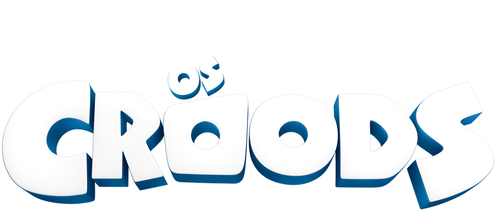
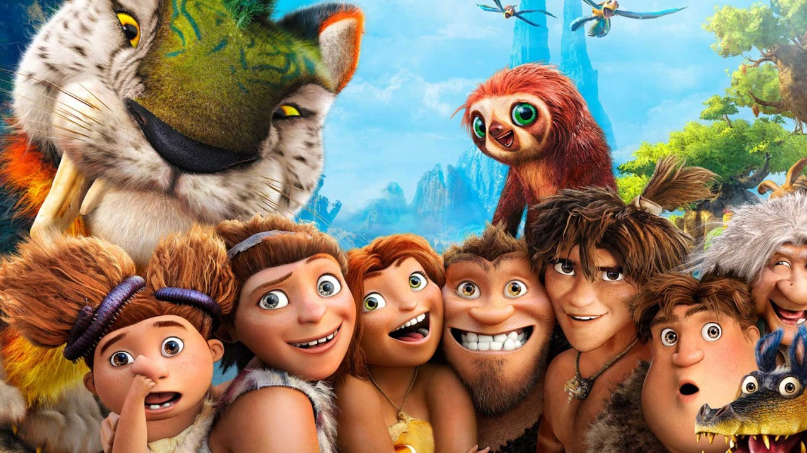
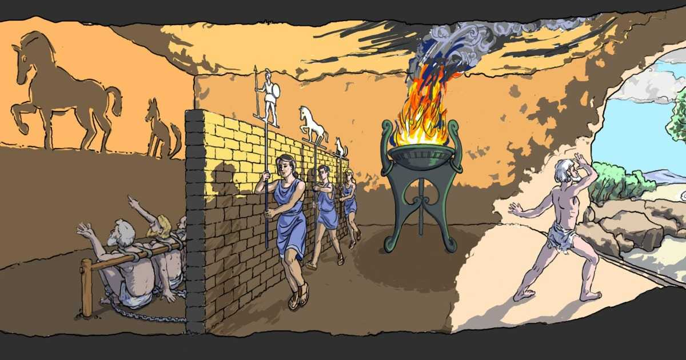
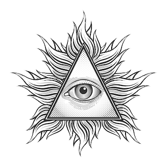

Qual é a relação entre o Mito da Caverna de Platão com o filme Os Croods?
⠀

Pode-se dizer que, o filme “Os Croods”, tem de certa forma uma relação com o Mito da Caverna, porém seria uma versão infantilizada da obra. Sendo assim, possuindo alguns dos conceitos principais abordados dentro da teoria.
Que veremos isso de maneira mais profunda, logo abaixo.
⠀
O filme Croods conta a hostória de uma família de neandertais que procura sobreviver em uma era perigosa e seguindos regras para se manter segura, que incluem, permanecerem numa caverna à noite. Por esse motivo e o fato de Eep, uma das filhas da família, desejar explorar o exterior, um confronto é criado na família. Graças as semelhanças inconstestáveis entre o filme e o "Mito da Caverna" de Platão, muitas relações poder ser estabelecidas.

⠀

O Mito da Caverna basicamente é uma narrativa, onde conta que indivíduos estavam presos olhando para uma parede em sua frente, nela era refletido a imagem de diversas coisas, como animais, objetos etc. E isso tudo, era devido a luz vindo de uma fogueira que iluminava o local, e desse jeito, projetando as tais figuras na parede.
Libertação
⠀
Assim como os prisioneiros do Mito da Caverna, a família Crood passou boa parte de suas vidas em uma caverna. Saindo de dia e voltando à noite, para se protegerem dos perigos da vida, essa rotina que, de certo modo, comparando aos prisioneiros do Mito da Caverna, se assenelha a um aprisionamento. No filme, isso vai contra a natureza de Eeb, uma garota curiosa que deseja conhecer o mundo e, junto a sua rebeldia a faz ir explorar este mesmo.
A Nova Visão
⠀

Estando acostumados a caverna, assim como no caso dos prisioneiros do conto de Platão, sua família não sente necessidade de sair desta. Eeb, por outro lado, não compartilha do mesmo pensamento e, assim como o prisioneiro que escapou no conto, Eeb foge e, pela noite, conhece Gruu, que a mostra parte de um mundo nunca visto por ela. Tendo agora consciência de um mundo muito mais vasto do que jamais imaginará, no dia seguinte, Eeb conta o que viu a sua família.
O Condenamento
⠀
Sabendo agora da saída de Eeb, sua família, (especialmente seu pai) a desaprovam e a punem por ter ido explorar o mundo fora de seuas zonas de conforto. Assim como no Mito da Caverna, o novo e recém iluminado pelo mundo Inteligível, é punido por compartilhar de sua nova visão da realidade, e para que sua suposta loucura não contagie outros, é morto pelos seus companheiros, que um dia já chegou a pensar igual. Eeb, no caso, não foi morta como no caso do conto, porém foi igualmente punida com sua liberdade sendo tirada de si, e sendo condenada por sua família à não sair da caverna a não sobre supervisão desta mesma.
Conclusão
⠀
Dados os pontos comparativos de ambas as obras, podemos ver que um julgamento por parte daqueles que, permanecem no Mundo Sensível, para com os que estão no Inteligível. Tanto em os Croods como no Mito da Caverna, o personagem em enfoque descobria um mundo novo, de "iluminação", e tem agora sua visão da realidade ampliada. Após Eeb e o prisioneiro passarem pelo processo de revelação, e, irem atrás de compartilharem com outras pessoas, foram tidos como loucos e punidos como tais. Podemos concluir que, no final, os novos e os que há um tempo são iluminados por uma visão diferente de realidade, acabam sofrendo o risco de serem condenados pelos ignorantes.
Participantes !!!
⠀
- Guilherme Evangelista
- Luan Hidemi
- Felipe Cipriano
- Lucas Dos Santos